01 · Post kwadratowy — cytat
Zasada
Budujemy,
nie doradzamy.
Każda domena kończy się czymś, co się uruchamia. Nie oddajemy prezentacji.
machinekind.ai
02 · Post kwadratowy — zapowiedź
Za chwilę
Tytuł
wystąpienia.
Imię Nazwisko · organizacja
machinekind.ai
03 · Post kwadratowy — znak

04 · Relacja pionowa 9:16
Kolektyw robotyki i AI
Uczymy maszyny poruszać się w świecie ludzi.
machinekind.ai